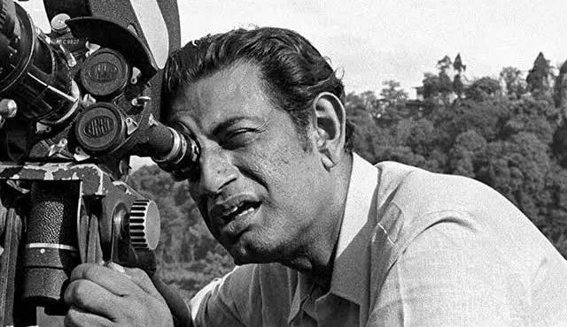
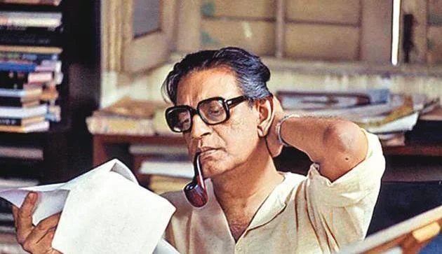

Step into the timeless universe of Satyajit Ray (1921–1992) — one of the greatest filmmakers, writers, and cultural icons of the 20th century. Ray’s artistry transcended boundaries, blending humanism with cinematic brilliance, and earning him global recognition as a master storyteller. Globally, Ray became a symbol of India’s cultural renaissance. His humanistic vision earned him admiration from figures like Akira Kurosawa, who famously said, “Not to have seen the cinema of Ray means existing in the world without seeing the sun or the moon.” In 1992, he received an Academy Honorary Award, a recognition of his unparalleled contribution to cinema. Ray’s legacy endures because his works remain timeless. They explore universal themes of love, morality, identity, and the human condition. His genius lay in his ability to move seamlessly between mediums, excelling in both cinema and literature, and leaving behind a body of work that continues to inspire filmmakers, writers, and artists across the world. To step into his universe is to discover a rare blend of empathy, imagination, and artistry that still feels alive decades after his passing.


Honored with the Bharat Ratna (India’s highest civilian award) and an Honorary Oscar, Ray’s impact is celebrated across the globe. His works remain a bridge between Indian traditions and universal human values. The Satyajit Ray Society and archives continue to preserve his memory and inspire new generations.